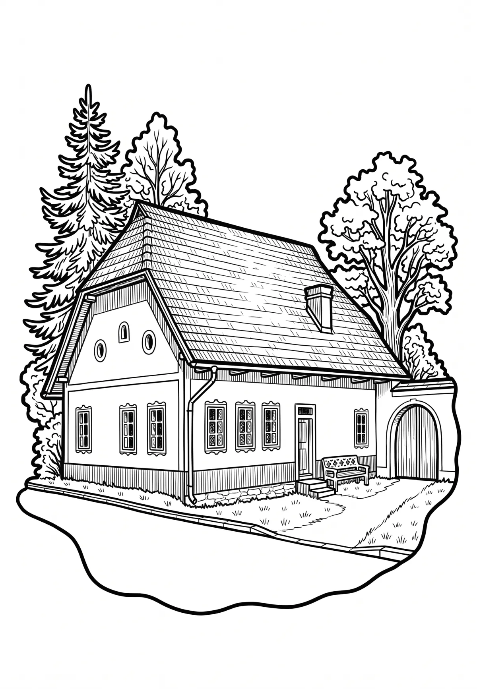

Horní Planá
Jihočeský kraj · 776 m n. m.

město · #015
Horní Planá (německy Oberplan) je město v okrese Český Krumlov v Jihočeském kraji. Leží na jihovýchodní Šumavě u Lipenské vodní nádrže. Žije zde přibližně 1 900 obyvatel. S rozlohou přes 127 km² je Horní Planá jednou z plošně největších obcí v Česku (6.